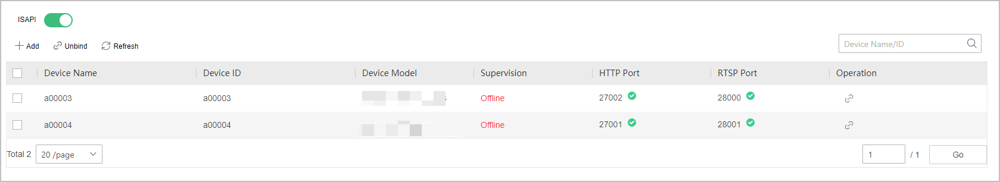
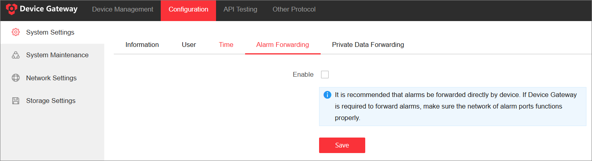
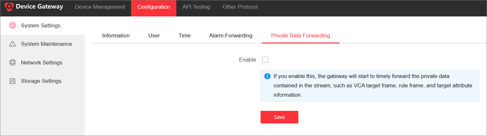
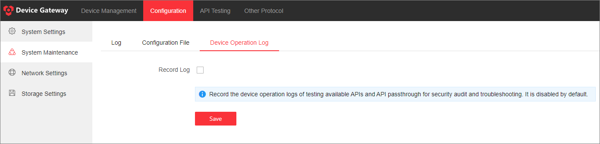
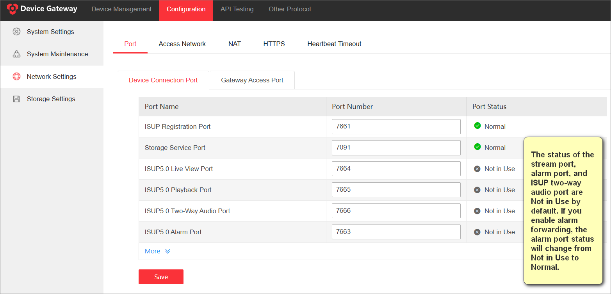
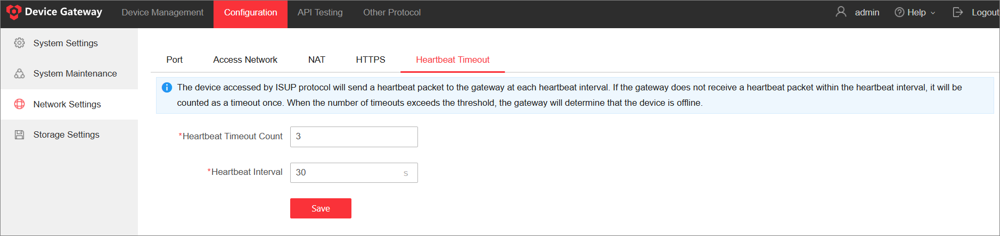

Other Configuration
ISAPI Management
To achieve the communication between the Device Gateway and the third-party platforms over the ISAPI protocol, you need to ensure that the parameters configured on the Device Gateway are consistent with those of the third-party platform.
Enable ISAPI
The ISAPI function is disabled by default. You can enable this function for the third-party platform (which supports ISAPI protocol, such as Milestone XProtect platform) to access the devices added to the Device Gateway.
Select , and then enable ISAPI

Bind Device with the Device Gateway
In order for a third-party platform (such as Milestone) to access ISUP devices, you need to bind devices with the Device Gateway, so that the Device Gateway can assign ISAPI ports to the bound devices.
-
Select Add to enter the Bind Device page.
-
Select the unbound device(s) in the device list.
-
Select to add the selected device(s) to the selected list.
-
Check the device(s) to be bound, and select OK.
NoteUp to 200 devices can be bound.
 to add the selected
device(s) to the selected list.
to add the selected
device(s) to the selected list. -
Port occupation by another program may cause the failure of device binding, so make sure you have ended the program occupying the port(s) before you rebind the device.
-
If the program cannot be ended, you can unbind the device first, and then bind the device again. In this case, the Device Gateway will assign new ports to the device.
-
The available HTTP port ranges from 27000 to 27800, while the available RTSP port ranges from 28000 to 28800.
-
Only ISUP devices can be bound with the Device Gateway.
-
You need to add corresponding firewall rules after binding ports for the Device Gateway on Linux, or the Device Gateway may be unable to start.
-
You need to enable Alarm Forwarding if you want to arm the bound devices.
Basic Configuration
The configuration module provides basic settings such as editing system information, setting network, searching operation logs, enabling alarm forwarding, and setting storage pathway. This section will introduce some major configurations.
Forward Alarm
If you enable this function, the alarm forwarding port will be used to forward the alarms reported by ISUP 5.0 devices to Hik Device Gateway. The Device Gateway can forward alarms and events in the XML format reported by ISUP5.0-enabled devices. This function is disabled by default.
You can enable Alarm Forwarding and ensure that the alarm forwarding port is available.

Forward Private Data
Support forwarding private data contained in streams of live view and playback (such as bounding box annotations and attributes of detected objects). This function is disabled by default.
Go to .

Export System Log
Export the system log for debugging.
-
Select .
-
Select a log level, and select Export to export the log to your local PC.
NoteIf you select the log level to Debug, logs with a higher log level will also be exported.
-
(Optional) Select Save to save the configuration such as the log level.
Record Device Operation Log
To prevent log file bloat, the system supports configuring whether to record the device operation logs of testing available APIs and API passthrough for security audit and troubleshooting. If enabled, it stores operation records for existing devices (deleted devices are not recorded) and automatically cleans up logs every 180 days. This function is disabled by default.
Go to .

Set Port
If the default ports are used by other services, you can edit them.
Select , edit the gateway access port numbers and device port numbers and save the port settings. The port status indicates whether the ports are already occupied.

Set HTTPS
HTTPS provides authentication of the web site and its associated web server, which protects against attacks. For example, if you set the port number as 443 and the IP address is 192.168.1.64, you may access the device by entering https://192.168.1.64:443 via a web browser. The Device Gateway provides three installing methods of HTTPS certificate.
-
Select to enter the HTTPS Setting page.
-
Check one of the installation methods to set HTTPS certificate.
Method
Description
Create self-signed certificate.
Enter the Country, Domain/IP, Validity and other information, and then click Save.NoteIf you already had a certificate installed, the "Create self-signed certificate." is grayed out.
Signed certificate is available, start the installation now.
Click Browse to select a signed certificate saved in the PC, and then click Install.
Create the certificate request first and continue the installation.
-
Select Create to create the certificate request. Enter the required information in the pop-up window and click OK to save.
-
Download the certificate request and submit it to the trusted certificate authority for signature.
-
After receiving the signed valid certificate, select Browse to select the downloaded certificate saved in the PC, and then select Install.
-
Heartbeat Timeout
To prevent frequent device disconnections due to network instability, Device Gateway supports configuring heartbeat timeout parameters. By default, the heartbeat interval is set to 30 seconds with 3 retries to determine if a device is offline. This means that the device accessed by ISUP protocol will send a heartbeat packet every 30 seconds. If Device Gateway does not receive a heartbeat packet within 30 seconds, it counts as one timeout. After 3 consecutive timeouts, the device is considered offline.
